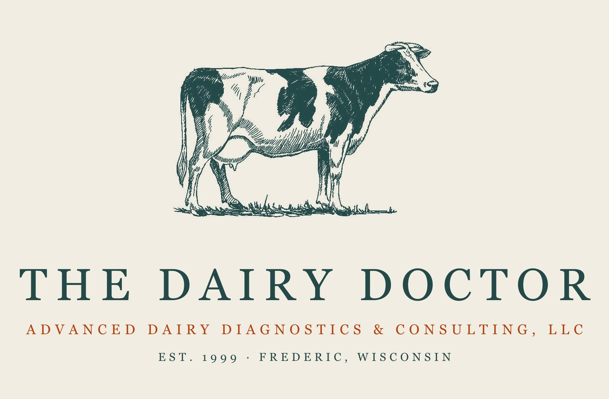
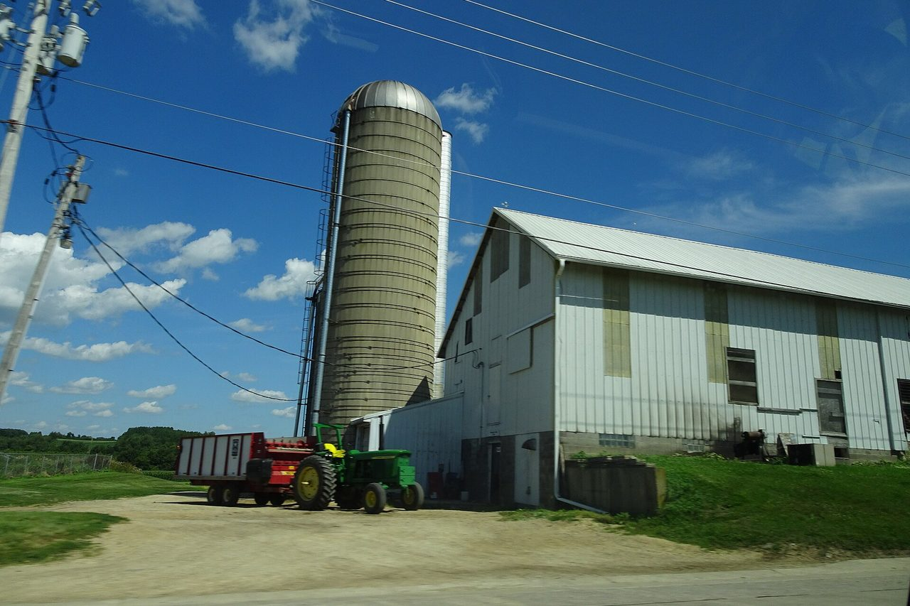

About Dr. Glenn Pearson, DVM
Dr. Pearson runs the lab and reads its results. He has more than 40 years of dairy and beef production medicine experience.
Training and practice

A 1985 graduate of the University of Illinois College of Veterinary Medicine, Dr. Pearson served for 15 years in traditional dairy practice in Cumberland, Wisconsin, prior to opening Dairy Pharm Services in 1999.
Married in 1988, Glenn and his wife Elaine have since been blessed with three sons. When he's not at Advanced Dairy Diagnostics & Consulting, Glenn is usually involved in his family's church, school and sports activities.
More than 20 years with BioPRYN
As the first BioPRYN® affiliate lab east of the Rockies, Advanced Dairy Diagnostics & Consulting began operations in 1999 under the original name of Dairy Pharm Services. Since the affiliation in 2005, ADDC has supported its clients with more than 20 years of proven experience using BioPRYN.
As a client of ADDC, you automatically receive the expert guidance of Dr. Pearson. With more than 40 years of dairy and beef production medicine experience, Dr. Pearson is only an email or phone call away from helping you with timely intervention and up-to-date corrective advice.
ADDC's clients benefit from this combination of reproductive knowledge and technology, including BioPRYN. Beyond it, ADDC also offers BVD, Johne's, Leukosis, Mycoplasma and other disease monitoring programs.
The lab is in Frederic, in northwest Wisconsin near the Minnesota line, and works by mail with herds across the Upper Midwest.
Our lab is closed to the public. For the biosecurity of every herd we test, we do not allow visitors into the laboratory. Samples come to us by mail.
Who reads your results
Every plate is read by the lab's veterinarian, and a recheck usually comes with a note on when to sample her again. Samples that reach the lab by Wednesday are reported Thursday.
How your results are read explains what pregnant, open and recheck mean, and the limits of a blood pregnancy test. If your herd works with a veterinarian, that page also has a section for your herd vet.
Herd health consulting
Every testing client gets Dr. Pearson's troubleshooting and support with their results. Herds that want more than that hire him as their consultant. As your personal consultant, he provides:
- Herd health and treatment records review and analysis
- Customized preventive programs and treatment plans for your herd
- Dairy Comp 305 records consulting
- Biosecurity program design
- Disease monitoring programs: BVD, Johne's, Leukosis and Mycoplasma
- Personalized training in on-farm procedures like tail bleeding and ear notching
The herd health consulting page explains how it starts and lists the records to have ready before a review.
